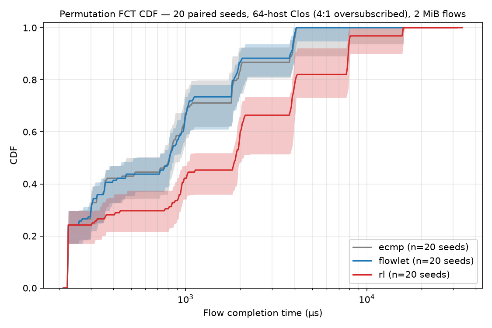
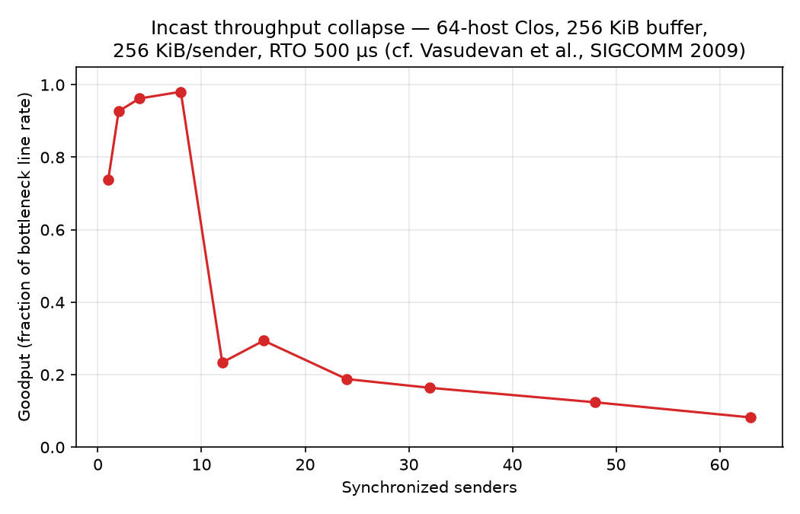
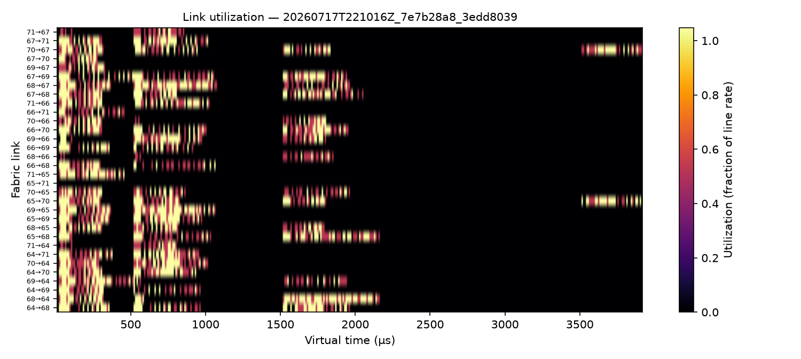

Evidence, not vibes
Figures below are unretouched artifacts from seeded runs — each regenerates from a single command against a git-tracked config, stamped with its config hash and git SHA.

FIG 1 Three-way FCT CDF, 20 paired seeds. 64-host Clos at 4:1 oversubscription, 2 MiB permutation flows. Flowlet halves pooled p99 vs ECMP with an unchanged median; the RL bandit trails both — see finding 03.

FIG 2 The validation gate. Goodput ramps to 0.98 of line rate at 8 synchronized senders, then collapses to 0.08 at 63 — the classic incast throughput-collapse curve (cf. Vasudevan et al., SIGCOMM 2009). No router comparison was run until the simulator reproduced this; CI enforces it on every push.

FIG 3 Fabric link utilization over virtual time under flowlet routing. The isolated bursts near 3,500 µs are straggler flows recovering from RTO-backoff cascades — visible in telemetry, reported as a limitation.
One interface, three routers, zero engine changes
A single-threaded deterministic core advances chunk-granularity events on a virtual clock. Congestion telemetry flows from the data plane to a pluggable IRouter — ECMP, flowlet, and RL swap behind it. The closed feedback loop from queue depth to path decision is the point of the project.
Open the interactive architecture diagram →
- Virtual clock in integer picoseconds — serialization delays exact, no float drift in event order
- No wall-clock, no sockets, no threads anywhere in the model path
- Every random draw from a named, logged stream — one master seed per run
- The router never sees wall-clock time, only fabric telemetry
- C++ core and Python analysis share only telemetry files (Parquet) — no FFI
- ASan + UBSan on every push, warnings-as-errors, analytic FCT anchor test
Findings — including the negative one
Three results, reported with equal weight. The clean negative is the most interesting of the three.
Congestion-aware flowlet routing halves p99 FCT
On 2 MiB permutation traffic over a 4:1-oversubscribed 64-host Clos, a CONGA-style flowlet router cuts pooled p99 flow-completion time from 15.9 ms to 7.9 ms against static ECMP across 20 paired seeds — with the median unchanged. The win lives in the tail, where it should.
Naive least-queue routing herds — 8× worse than ECMP
Queue telemetry lags send decisions by the host→leaf latency, so every sender simultaneously picks the same “least loaded” spine, then simultaneously flees it. Before hysteresis existed, adaptive routing measured ~8× worse than the static control. The fix is coordination, not information: stickiness plus a hysteresis margin wide enough to absorb a flow’s own backlog, plus hashed spread among near-equal choices.
The RL router loses — and the reason is structural
A tabular contextual bandit with information parity to the heuristic (same telemetry, reward = −queueing delay) underperforms both baselines: exploration doubles the median, and reducing it makes the tail worse — many concurrent senders greedily sharing one Q-table herd exactly like finding 02, but without the heuristic’s built-in decorrelation.
The honest conclusion: per-decision learned policies need coordination mechanisms or cross-episode training to compete in this regime. Deterministic, reproducible, and written up as a first-class result in docs/RESULTS.md.
One command = one figure
Clone, build, and regenerate every figure on this page. Runs are stamped with config hash + git SHA; a dirty tree is recorded in the manifest and disqualifies the artifact.
# build the deterministic core (C++20, zero third-party deps) $ cmake -B build -DCMAKE_BUILD_TYPE=Release && cmake --build build -j $ python3 -m venv .venv && .venv/bin/pip install -r requirements.txt # fig 2 — validation gate: incast collapse must reproduce (exit 1 if not) $ .venv/bin/python python/validate_incast.py peak=0.981 tail=0.082 collapse=YES # fig 1 — three-way comparison, 20 paired seeds, bootstrap CIs $ .venv/bin/python python/harness.py --routers ecmp,flowlet,rl --seeds 20 # fig 3 — link-utilization heatmap from any run directory $ .venv/bin/python python/plot_heatmap.py results/sweep/runs/<run_dir>
Scale, honestly stated: headline experiments at 64 hosts, engine validated to 1024 hosts (2.1 M-flow all-reduce in 5.5 s, one core). Packet-train granularity, single failure domain, static topology — the boundary of the claim, stated up front.